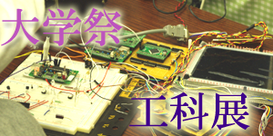
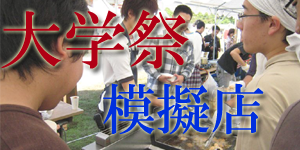
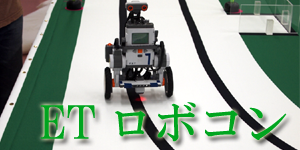
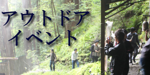

大学祭で開催される工科展は、研究室やサークル等がその研究成果を発表する場です。
シス研も毎年出展しています。一番力をいれるイベントであり、皆でひとつもの物をつくるという、貴重な経験を積むことができます。

大学祭にて模擬店を出店しています。シス研は伝統の唐揚げとポテト！ 代々伝わる調理法で毎年大きな利益を出しています。

ETロボコンは組み込み技術と分析・設計のモデリングの力が問われる大会です。
シス研はチームAITとして他の研究室と合同で出場しています。この大会に参加すれば、結果に関係なく高度な技術が身につくはずです。
ETロボコン チームAITブログ

普段は部室でわいわいのシス研ですが、アウトドアイベントも行います。バーベキューやキャンプ、飲み会等等、大学生らしいイベントが盛りだくさんです。